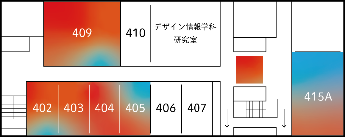

トップ
「ほどける」とは
作品一覧
フロアマップ
開催概要
アクセス
2024.1.12
(Fri.)
-1.15
(Mon.)
9:00-17:00
入場無料
©デザイン情報学科 卒業・修了制作展2024
TOP
CONCEPT
WORKS
MAP
ABOUT・ACCESS
キャンパスマップ
9号館

3F
305C
▶︎
田中瞳
立体花鳥朝夕昼夜図
305D
▶︎
高橋龍
Attracted to the Fluorescence Light
▶︎
神村竣哉
DEEP BLUE
306C
▶︎
加藤由希子
影
▶︎
奥寺新之介
「青龍蝦の視」展
▶︎
水野まい
かぷかぷわらったよ
307
▶︎
粕川愛巳里
星降る夜のエトランゼ
▶︎
チョヒウォン
firince
309
▶︎
守屋綾乃
影と光
▶︎
潮優羽
―言語の記号と想像力の関係について―
▶︎
シンウソップ
wefruitclub
▶︎
塚本真帆
―アルゴリズミックなアプローチによる伝統的な和菓子における外観拡張の試み―
▶︎
園田美宙
星骸
▶︎
永井美蘭
SENGGI OF MANCHU
▶︎
河村駿
視覚記憶の優先順位
▶︎
チョウカキ
IDOLLU
▶︎
八木田新菜
錯視のパラドックス
▶︎
チャンジェウォン
siori
3階エレベーターホール